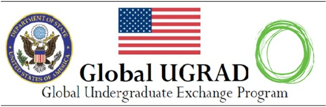
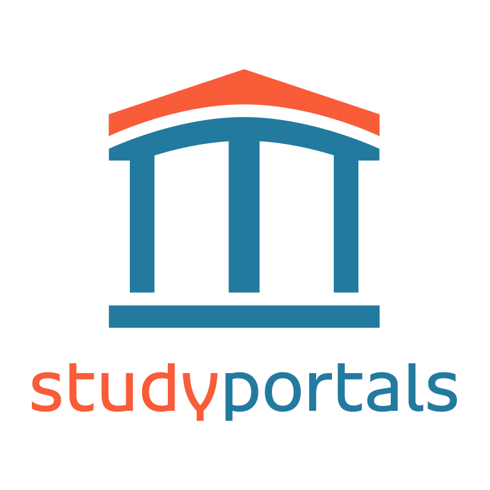
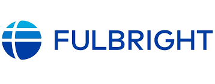
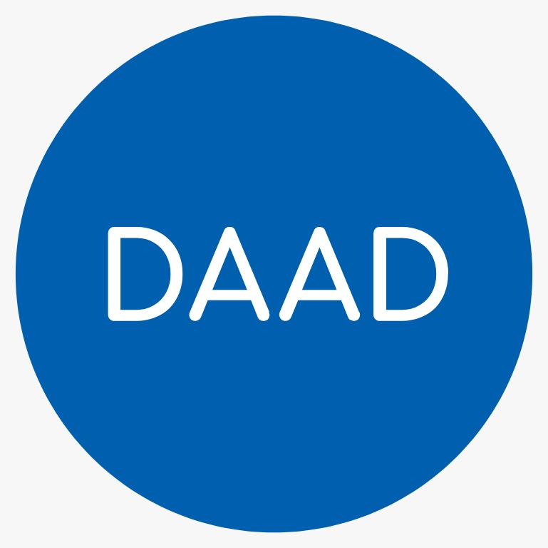

Programas de Becas Internacionales

Global UGRAD (Estados Unidos)El Global Undergraduate Exchange Program (Global UGRAD) es un programa del Departamento de Estado de EE. UU. que ofrece a estudiantes universitarios la oportunidad de estudiar un semestre en una universidad estadounidense.
Características principales:
- Duración: 1 semestre académico (5 meses).
- Financiación completa (viaje, estudios, seguro médico, estipendio mensual, alojamiento).
- Los estudiantes deben regresar a su país al finalizar el intercambio.
- Incluye actividades culturales, voluntariado y liderazgo.
Requisitos generales:
- Ser estudiante universitario activo.
- Buen rendimiento académico.
- Nivel intermedio de inglés (TOEFL financiado si avanzas a la siguiente ronda).
- Ser líder y participar en actividades comunitarias.

Study Portals (Europa/Global)Study Portals es una plataforma oficial europea que reúne miles de becas disponibles en Europa y otros países. Permite buscar becas por país, universidad, carrera o nivel de estudios.
Para qué sirve:
- Buscar becas según país, nivel de estudios, área académica y tipo de financiamiento.
- Encontrar becas de universidades, gobiernos y organizaciones privadas.
- Es una de las bases de datos de becas más completas del mundo.
Beneficios para estudiantes:
- Fácil de usar.
- Información actualizada.
- Búsquedas filtradas.
- Acceso a becas y universidades de gobiernos.
 Erasmus+ (Europa)
Erasmus+ (Europa)
Erasmus+ es uno de los programas de intercambio académico más grandes del mundo, financiado por la Unión Europea.
¿Qué ofrece?
- Intercambio estudiantil en más de 30 países europeos.
- Becas para licenciatura, maestría y prácticas profesionales.
-
Financiación parcial o completa, que puede incluir:
- Alojamiento
- Manutención
- Transporte
- Seguro
- Matrícula
Ventajas del programa:
- Movilidad dentro de toda la Unión Europea.
- Experiencia multicultural.
- Oportunidades de prácticas en empresas europeas.
- Muy valorado en el ámbito laboral.

Becas FullbrightEl programa Fulbright es una de las becas más prestigiosas del mundo, financiada por el gobierno de Estados Unidos.
¿Para qué sirve?
Ofrece becas completas para realizar estudios de posgrado (maestría o doctorado) en universidades de EE. UU.
Qué cubre:
- Colegiatura completa
- Estipendio mensual
- Alojamiento
- Seguro médico
- Pasaje aéreo
- Apoyo para trámites y orientación cultural
Perfil del candidato:
- Excelencia académica
- Liderazgo demostrado
- Dominio avanzado del inglés
- Compromiso con mejorar su comunidad

DAAD - Servicio Alemán de Intercambio Académico (Alemania)El DAAD es la organización pública alemana que ofrece una de las mayores variedades de becas para estudiar en Europa.
¿Qué ofrece?
- Licenciatura (limitadas)
- Maestría
- Doctorado
- Investigación
- Cursos de verano de idioma alemán
Qué cubre (según el programa):
- Matrícula completa o parcial
- Alojamiento
- Estipendio mensual
- Seguro médico
- Curso preparatorio de alemán
- Pasaje aéreo
Razones para aplicar:
- Alemania tiene educación de muy alta calidad.
- Muchas universidades no cobran colegiatura.
- Programas disponibles en inglés y alemán.
- DAAD es altamente reconocido por empleadores.